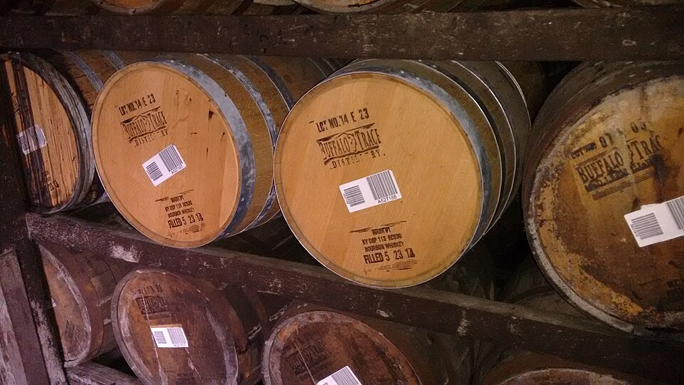

The grain recipe — called the mash bill — is the blueprint of every bourbon's flavor. Small shifts in corn, rye, wheat, and barley percentages produce dramatically different taste profiles, ranging from soft and dessert-sweet to bone-dry and peppery.
